休暇や残業などを申請する
年次有給休暇を取得する場合や、残業する場合などの申請について説明します。
同じ部課内であれば、代理で他の人の申請をすることもできます。
申請は［勤怠承認申請］メニューから行います。
ヒント |
管理用メニューの共通マスタで「申請機能」が使用しない設定であると、個人用メニューに［勤怠承認申請］が表示されません。その場合は、［勤怠実績］から休暇や残業などを入力します。詳細は「勤怠実績を修正・確認する」をご覧ください。
|
［勤怠承認申請］メニューでは次の申請ができます。
※事前申請で指定できる日付は1年先までとなります。
申請種別 |
申請タイミング |
備考 |
残業申請 |
事前または事後 |
早出出勤の場合も残業申請を使用。 |
直行直帰申請 |
事前または事後 |
|
遅刻・早退申請 |
事前または事後 |
遅刻、早退の連絡用の申請。 |
休日出勤申請 |
事前または事後 |
振替休日を取得する場合は申請時に日付を指定。 |
年次有給休暇申請 |
事前または事後 |
|
特別休暇申請 |
事前または事後 |
|
代休申請 |
休日出勤申請時に振替休日を指定しなかった場合 |
|
勤怠修正申請 |
事後 |
|
ご注意 |
申請した内容が自動的に勤怠実績にも反映されるかどうかは、管理者メニュー「共通マスタ」の「勤怠更新」の設定により異なります。
「勤怠更新」の設定内容が不明な場合は、各企業の管理者様にご確認ください。
-
「勤怠更新：使用する」の場合
申請が決裁されると、申請内容が自動的に勤怠実績に反映されます。
-
「勤怠更新：使用しない」の場合
申請が決裁されても、申請内容は勤怠実績に反映されません。
［勤怠修正申請］または［勤怠実績］より勤怠を更新する必要があります。
|
残業申請をする
早出出勤の申請もこちらから行います。
［勤怠承認申請］メニューをクリックする
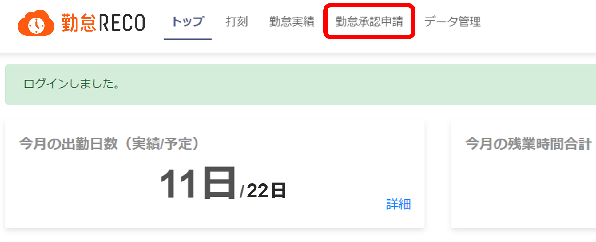
［新規申請作成］をクリックし、［残業申請］をクリックする
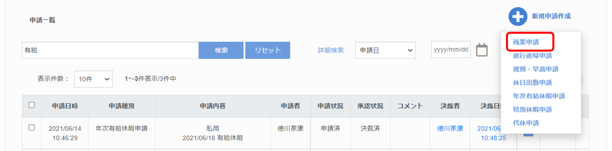
残業申請の入力画面が表示されます。
①～⑥を入力し、［申請］をクリックする（⑩）
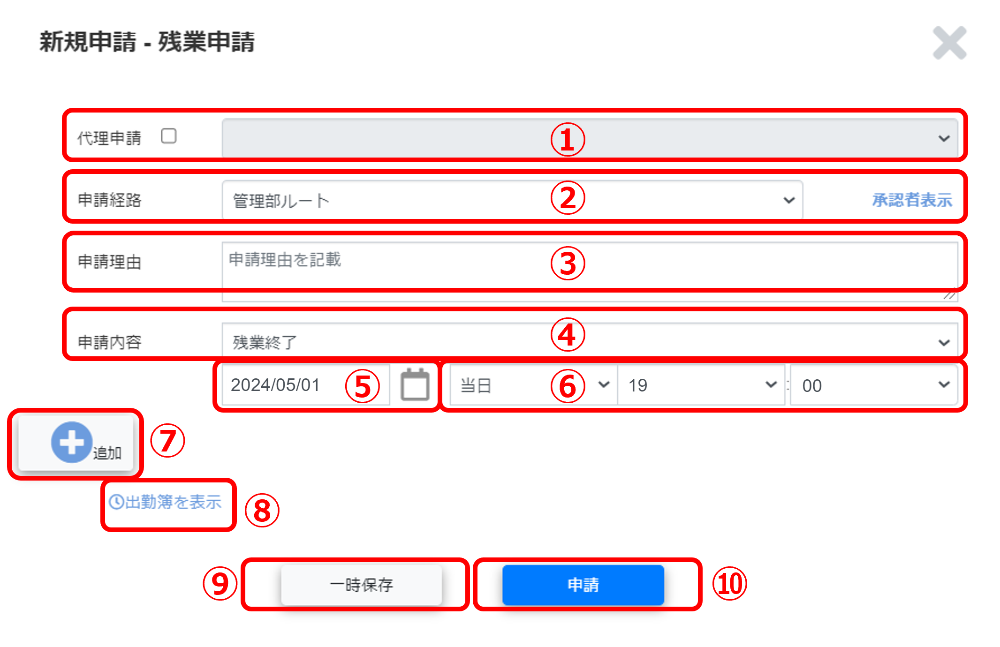
代理申請
代理で申請する場合は、「代理申請」の右の□をクリックしてチェックマークをつけ、プルダウンから代理で申請する人を選択します。代理申請の対象は、同じ部課内の従業員です。
申請経路
ドロップダウンリストから承認経路マスタを選択します。
申請理由
残業（または早出）理由を入力します。省略可能です。
申請内容
ドロップダウンリストから申請したい勤怠を選択します。
残業日
クリックしてカレンダーを表示させ、残業・早出する（した）日を選択します。
残業時間
クリックして残業終了日（または早出開始日）を、「当日」か「翌日」（日をまたぐ早出の場合は「前日」）からを選択し、残業終了時刻（または早出開始時刻）を入力します。
申請追加ボタン
クリックすると、別の日の残業申請ができます。①～⑥を入力してください。
出勤簿を表示
勤怠実績画面が別ウィンドウで表示されます。残業・早出する（した）日と残業・早出時間を確認できます。
［一時保存］ボタン
入力内容を途中で保存したい場合は［一時保存］のボタンをクリックします。一時保存すると申請一覧画面に戻り、申請状況が「一時保存」となって申請が保存されます（①）。
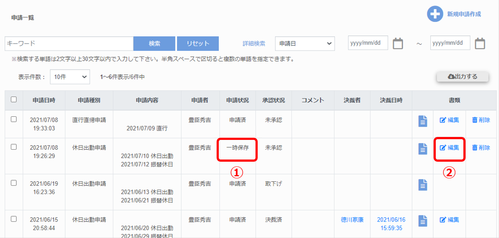
申請を完了させる場合は申請一覧画面で［編集］をクリックし（②）入力してください。
申請状況が「一時保存」の状態であれば、何度でも申請を編集できます。
［申請］ボタン
クリックすると入力した内容で申請します。
申請すると申請一覧画面に戻り、画面上部に「登録が完了しました。」とメッセージが表示されます。
申請が決裁される
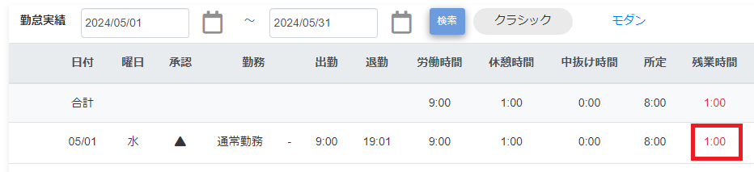
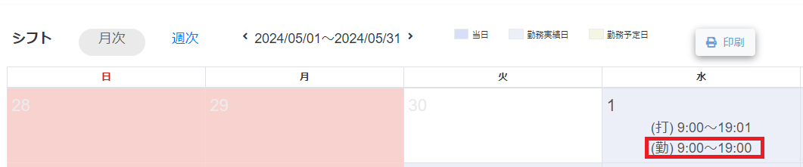
申請承認が決裁完了し、勤怠実績に反映されると、カレンダーの勤務時間に残業申請の退勤時間が表示されます。
※「勤怠更新：使用しない」設定である場合、勤怠実績は手動で更新してください。
ご注意 |
残業申請した勤務時間より早く退勤した場合は、実際の打刻時間（または入力時間）が反映されます。
申請時刻より遅く退勤した場合は、申請を取り下げ、再申請する必要があります。 |
直行直帰申請をする
［勤怠承認申請］メニューをクリックする
［新規申請作成］をクリックし、［直行直帰申請］をクリックする
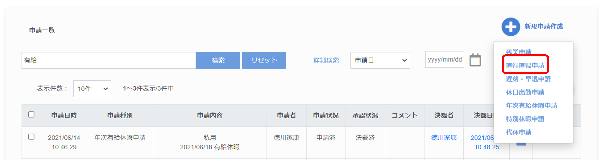
直行直帰申請の入力画面が表示されます。
①～⑤を入力し、［申請］をクリックする（⑨）
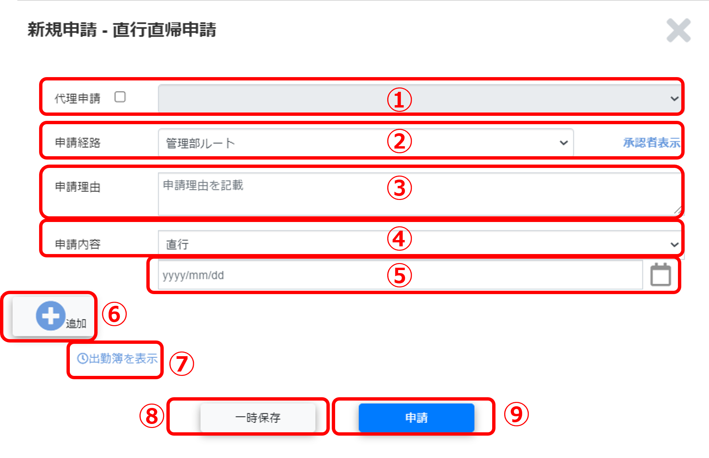
代理申請
代理で申請する場合は、「代理申請」の右の□をクリックしてチェックマークをつけ、プルダウンから代理で申請する人を選択します。代理申請の対象は、同じ部課内の従業員です。
申請経路
ドロップダウンリストから承認経路マスタを選択します。
申請理由
直行／直帰理由を入力します。省略可能です。
申請内容
ドロップダウンリストから申請したい勤怠を選択します。
日付
クリックしてカレンダーを表示させ、直行／直帰する（した）日を選択します。
申請追加ボタン
クリックすると、別の日の直行直帰申請ができます。①～⑤を入力してください。
出勤簿を表示
勤怠実績画面が別ウィンドウで表示されます。直行直帰する（した）日を確認できます。
［一時保存］ボタン
入力内容を途中で保存したい場合は［一時保存］のボタンをクリックします。一時保存すると申請一覧画面に戻ります。
［申請］ボタン
クリックすると入力した内容で申請します。
申請すると申請一覧画面に戻り、画面上部に「登録が完了しました。」とメッセージが表示されます。
申請が決裁される
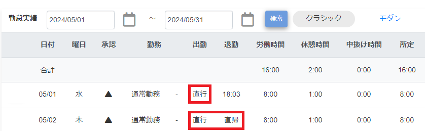
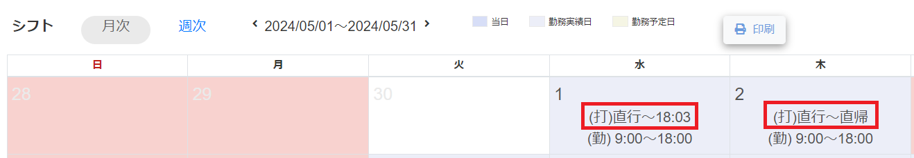
申請承認が決裁完了し、勤怠実績に反映されると、カレンダーの打刻時間に直行直帰が表示されます。
ご注意 |
当日になって直行直帰の予定がなくなった場合は、出退勤の打刻は通常通りに行い、直行直帰申請は取り下げてください。申請の取り下げは、出退勤の打刻後、打刻前のどちらで行っても問題ありません。
|
ヒント |
直行直帰を申請した場合でも、通常どおり打刻を行う事が可能です。直行直帰を申請した日に打刻すると、勤怠実績は以下の通りに登録されます。
・勤怠更新を使用しない場合、打刻した時刻が「打刻時間」と「勤務時間」に反映されます。
・勤怠更新を使用する場合、打刻した時刻が「打刻時間」にのみ反映され、「勤務時間」には反映されません。
|
遅刻・早退申請をする
［勤怠承認申請］メニューをクリックする
［新規申請作成］をクリックし、［遅刻・早退申請］をクリックする
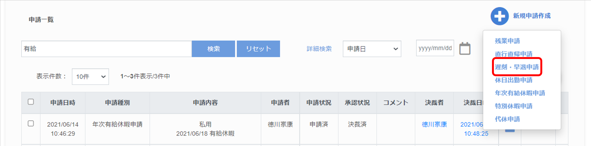
遅刻・早退申請の入力画面が表示されます。
①～⑤を入力し、［申請］をクリックする（⑨）
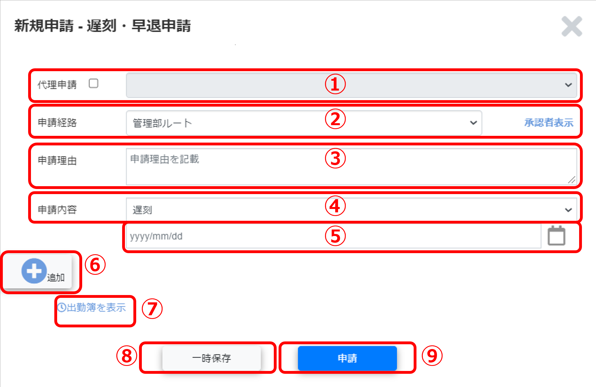
代理申請
代理で申請する場合は、「代理申請」の右の□をクリックしてチェックマークをつけ、プルダウンから代理で申請する人を選択します。代理申請の対象は、同じ部課内の従業員です。
申請経路
ドロップダウンリストから承認経路マスタを選択します。
申請理由
遅刻または早退理由を入力します。省略可能です。
申請内容
ドロップダウンリストから申請したい勤怠を選択します。
日付
クリックしてカレンダーを表示させ、遅刻・早退する（した）日を選択します。
申請追加ボタン
クリックすると、別の日の申請ができます。①～⑤を入力してください。
出勤簿を表示
勤怠実績画面が別ウィンドウで表示されます。遅刻・早退する（した）日を確認できます。
［一時保存］ボタン
入力内容を途中で保存したい場合は［一時保存］のボタンをクリックします。一時保存すると申請一覧画面に戻ります。
［申請］ボタン
クリックすると入力した内容で申請します。
申請すると申請一覧画面に戻り、画面上部に「登録が完了しました。」とメッセージが表示されます。
申請が決裁される
ヒント |
申請時に時間を入力する必要はありません。
実際の出社・退勤の打刻時間（入力時間）が勤務時間に反映されます。 |
休日出勤申請をする
［勤怠承認申請］メニューをクリックする
［新規申請作成］をクリックし、［休日出勤申請］をクリックする
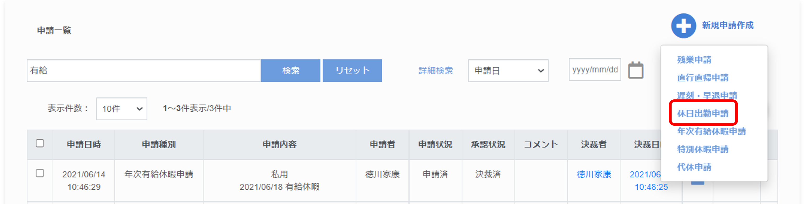
休日出勤申請の入力画面が表示されます。
①～④を入力し、［申請］をクリックする（⑦）
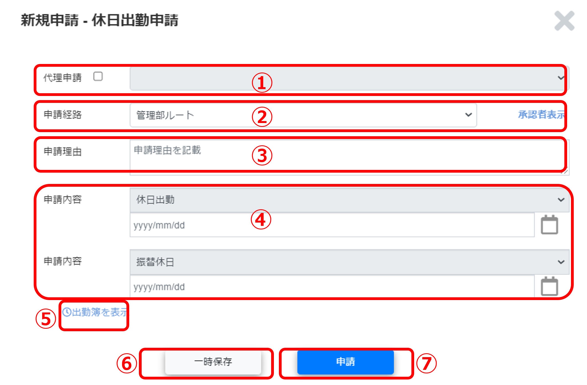
代理申請
代理で申請する場合は、「代理申請」の右の□をクリックしてチェックマークをつけ、プルダウンから代理で申請する人を選択します。代理申請の対象は、同じ部課内の従業員です。
申請経路
ドロップダウンリストから承認経路マスタを選択します。
申請理由
休日出勤の理由を入力します。（省略可能です）。
申請内容
休日出勤日と振替休日を取得する日を申請します。
「休日出勤」下の日付欄をクリックしてカレンダーを表示させ、休日出勤する（した）日を選択します。休日出勤日を選択すると、自動的に「振替休日」用のカレンダーが表示されますので、取得予定日を選択します。
※振替休日を指定せず申請した場合は、休日出勤後に「代休」を取得できます。
出勤簿を表示
勤怠実績画面が別ウィンドウで表示されます。休日出勤する（した）日を確認できます。
［一時保存］ボタン
入力内容を途中で保存したい場合は［一時保存］のボタンをクリックします。一時保存すると申請一覧画面に戻ります。
［申請］ボタン
クリックすると入力した内容で申請します。
申請すると申請一覧画面に戻り、画面上部に「登録が完了しました。」とメッセージが表示されます。
申請が決裁される
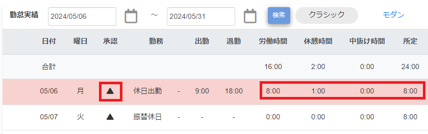
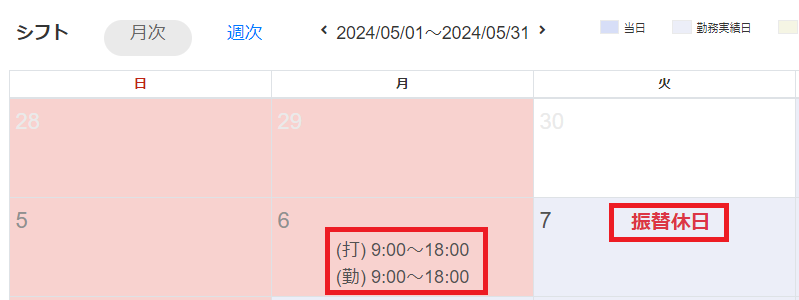
申請承認が完了し、かつ当日の勤怠実績を登録すると、承認は「▲」となり、労働時間や休憩時間等が表示されます。振替休日を取得した場合は、カレンダーに振替休日が表示されます。
年次有給休暇申請をする
［勤怠承認申請］メニューをクリックする
［新規申請作成］をクリックし、［年次有給休暇申請］をクリックする
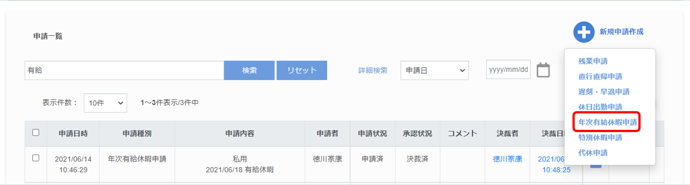
年次有給休暇申請の入力画面が表示されます。
①～⑤を入力し、［申請］をクリックする（⑨）
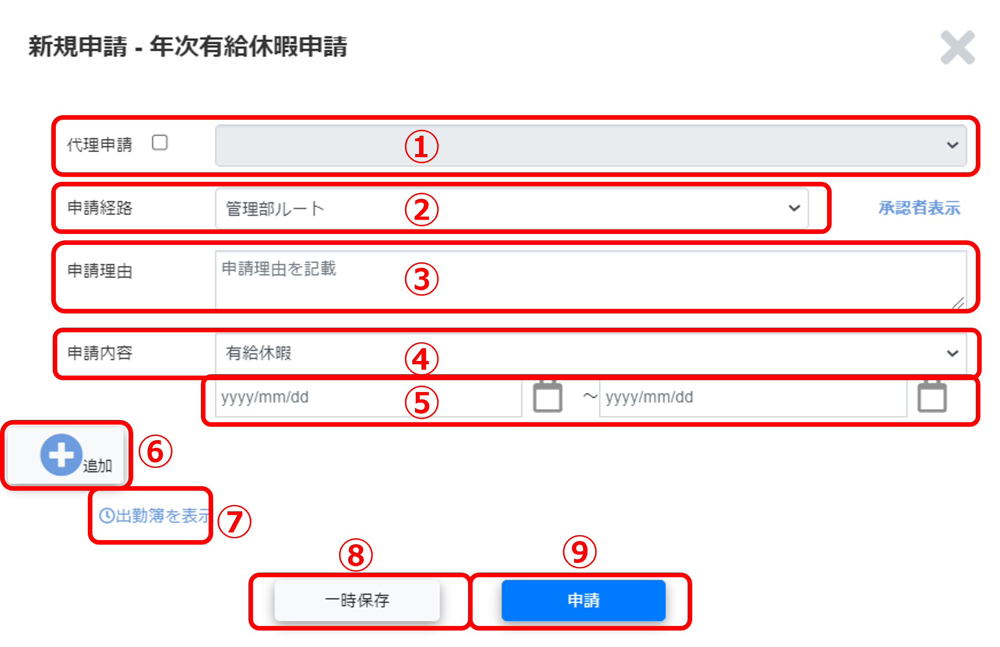
代理申請
代理で申請する場合は、「代理申請」の右の□をクリックしてチェックマークをつけ、プルダウンから代理で申請する人を選択します。代理申請の対象は、同じ部課内の従業員です。
申請経路
ドロップダウンリストから承認経路マスタを選択します。
申請理由
年次有給休暇を取得する理由を入力します。
申請内容
ドロップダウンリストから申請したい勤怠を選択します。
日付
クリックしてカレンダーを表示させ、年次有給休暇を取得する（した）日／期間を選択します。
申請追加ボタン
クリックすると、別の日の申請ができます。①～⑤を入力してください。
出勤簿を表示
勤怠実績画面が別ウィンドウで表示されます。年次有給休暇を取得する（した）日を確認できます。
［一時保存］ボタン
入力内容を途中で保存したい場合は［一時保存］のボタンをクリックします。一時保存すると申請一覧画面に戻ります。
［申請］ボタン
クリックすると入力した内容で申請します。
申請すると申請一覧画面に戻り、画面上部に「登録が完了しました。」とメッセージが表示されます。
申請が決裁される
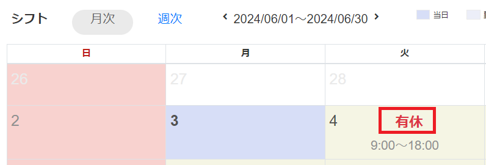
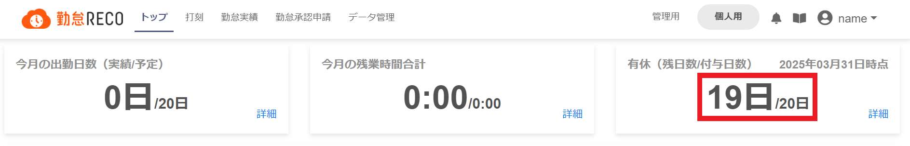
申請承認が決裁完了し、勤怠実績に反映されると、有休（残日数/付与日数）に取得有休が反映されます。
※「勤怠更新：使用しない」設定である場合、勤怠実績は手動で更新してください。
ヒント |
有休（残日数/付与日数）には年度末時点の有休残数を表示するため、未来日の有休も表示されます。
|
特別休暇申請をする
［勤怠承認申請］メニューをクリックする
［新規申請作成］をクリックし、［特別休暇申請］をクリックする
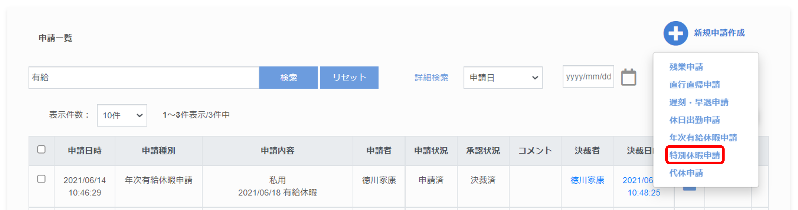
特別休暇申請の入力画面が表示されます。
①～⑤を入力し、［申請］をクリックする（⑨）
代理申請
代理で申請する場合は、「代理申請」の右の□をクリックしてチェックマークをつけ、プルダウンから代理で申請する人を選択します。代理申請の対象は、同じ部課内の従業員です。
申請経路
ドロップダウンリストから承認経路マスタを選択します。
申請理由
特別休暇を取得する理由を入力します。
申請内容
ドロップダウンリストから申請したい勤怠を選択します。
日付
クリックしてカレンダーを表示させ、特別休暇を取得する（した）日／期間または時間を選択します。
申請追加ボタン
クリックすると、別の日の申請ができます。①～⑤を入力してください。
出勤簿を表示
勤怠実績画面が別ウィンドウで表示されます。特別休暇を取得する（した）日／期間を確認できます。
［一時保存］ボタン
入力内容を途中で保存したい場合は［一時保存］のボタンをクリックします。一時保存すると申請一覧画面に戻ります。
［申請］ボタン
クリックすると入力した内容で申請します。
申請すると申請一覧画面に戻り、画面上部に「登録が完了しました。」とメッセージが表示されます。
申請が決裁される
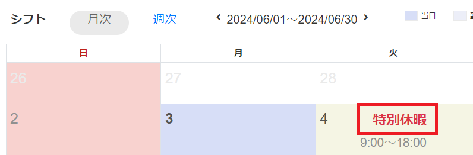
申請承認が決裁完了し、勤怠実績に反映されると、カレンダーに特別休暇が表示されます。
※「勤怠更新：使用しない」設定である場合、勤怠実績は手動で更新してください。
ヒント |
特別休暇はトップ画面の「有休（残日数/付与日数）」表示には反映されず、詳細リンクから休暇区分を指定することで残日数/付与日数を確認できます。
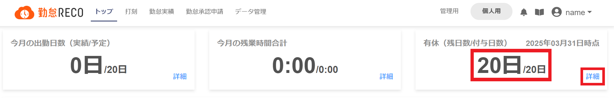
|
代休申請をする
ご注意 |
代休取得申請は、振替休日を指定せずに「休日出勤申請」を申請し、休日出勤日の勤務実績入力（打刻）を行った後、申請できます。
休日出勤日の実労働時間が「勤務形態」の勤務時間に満たない場合は、代休は付与されません。
|
［勤怠承認申請］メニューをクリックする
［新規申請作成］をクリックし、［代休申請］をクリックする
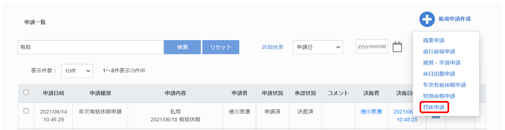
代休申請の入力画面が表示されます。
①～④を入力し、［申請］をクリックする（⑧）
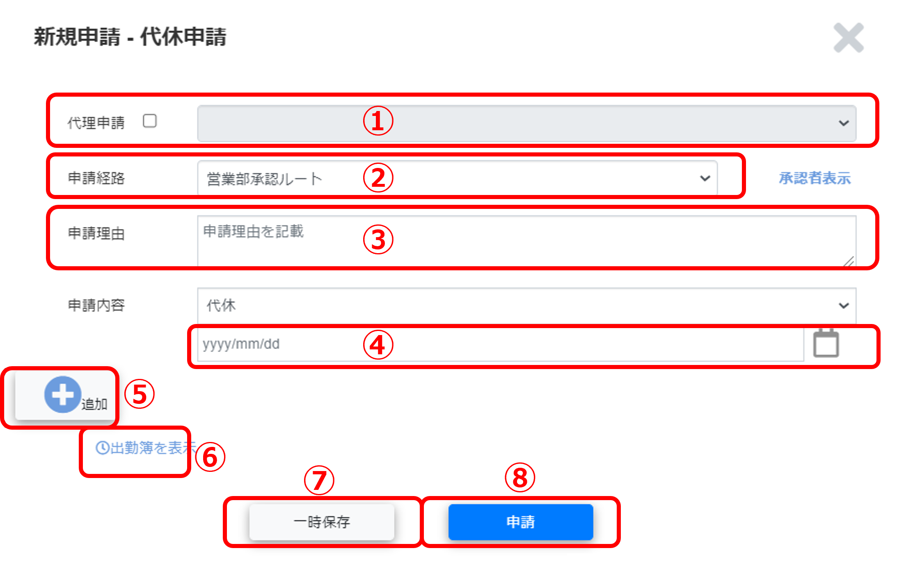
代理申請
代理で申請する場合は、「代理申請」の右の□をクリックしてチェックマークをつけ、プルダウンから代理で申請する人を選択します。代理申請の対象は、同じ部課内の従業員です。
申請経路
ドロップダウンリストから承認経路マスタを選択します。
申請理由
代休を取得する理由を入力します。
代休日
クリックしてカレンダーを表示させ、代休を取得する（した）日を選択します。
申請追加ボタン
クリックすると、別の日の申請ができます。①～④を入力してください。
出勤簿を表示
勤怠実績画面が別ウィンドウで表示されます。代休を取得する（した）日を確認できます。
［一時保存］ボタン
入力内容を途中で保存したい場合は［一時保存］のボタンをクリックします。一時保存すると申請一覧画面に戻ります。
［申請］ボタン
クリックすると入力した内容で申請します。
申請すると申請一覧画面に戻り、画面上部に「登録が完了しました。」とメッセージが表示されます。
申請が決裁される
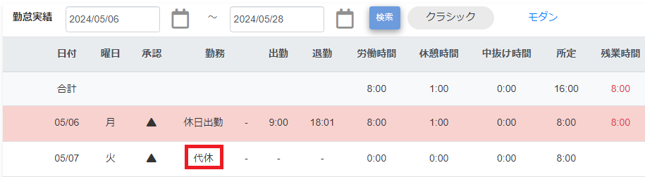
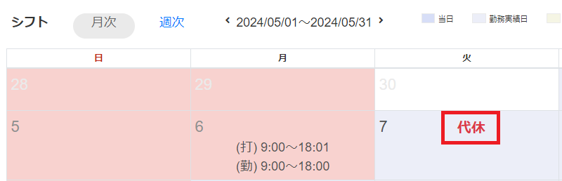
申請承認が決裁完了し、勤怠実績に反映されると、カレンダーに代休が表示されます。
※「勤怠更新：使用しない」設定である場合、勤怠実績は手動で更新してください。
勤怠修正申請をする
打刻忘れや打刻時間の修正を行う場合に使用します。［勤怠実績］の勤怠修正が利用できない場合、この機能で勤怠の登録や削除を行います。
［勤怠承認申請］メニューをクリックする
［新規申請作成］をクリックし、［勤怠修正申請］をクリックする
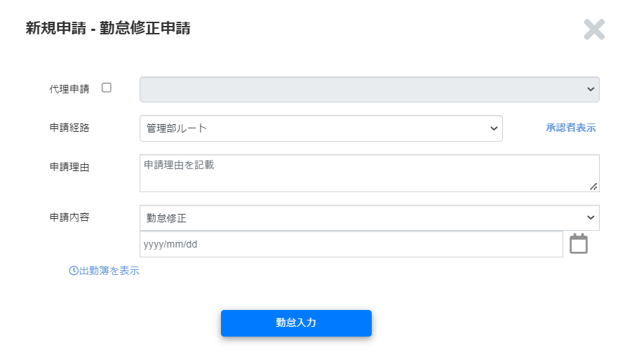
勤怠修正申請申請の入力画面が表示されます。
①～⑤を入力し、［勤怠入力］をクリックする（⑦）
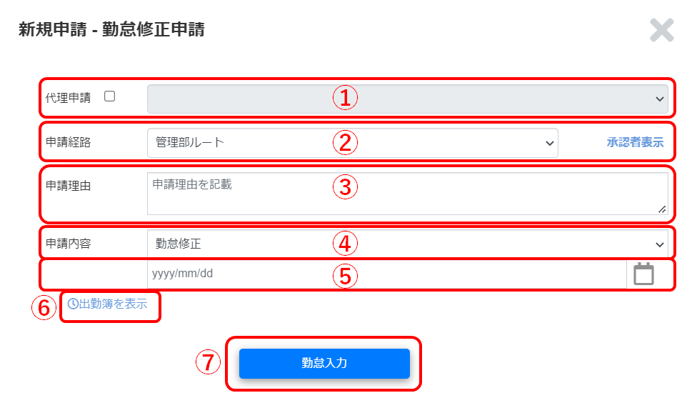
代理申請
代理で申請する場合は、「代理申請」の右の□をクリックしてチェックマークをつけ、プルダウンから代理で申請する人を選択します。代理申請の対象は、同じ部課内の従業員です。
申請経路
ドロップダウンリストから承認経路マスタを選択します。
申請理由
勤怠修正を変更・削除する理由を入力します。
申請内容
ドロップダウンリストから勤怠修正または勤怠削除を選択します。
日付
クリックしてカレンダーを表示させ、勤怠修正、勤怠削除を行う日を選択します。
１件の申請で修正できる勤怠は１日分のみです。
出勤簿を表示
勤怠実績画面が別ウィンドウで表示されます。勤怠修正申請をする（した）日を確認できます。
［勤怠入力］ボタン
選択した日付の勤怠入力モーダルを表示します。
修正したい勤怠を入力し、［申請］をクリックする
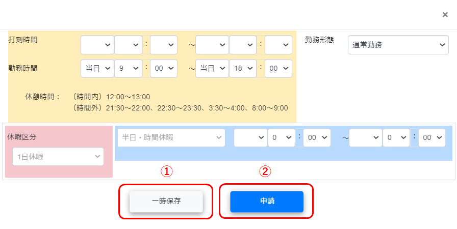
［一時保存］ボタン
入力内容を途中で保存したい場合は［一時保存］のボタンをクリックします。一時保存すると申請一覧画面に戻ります。
［申請］ボタン
クリックすると入力した内容で申請します。
申請すると申請一覧画面に戻り、画面上部に「登録が完了しました。」とメッセージが表示されます。
申請が決裁される
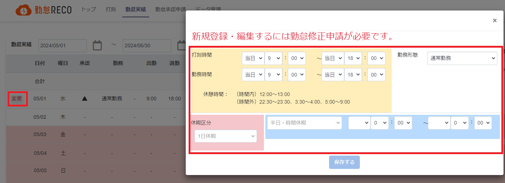
申請承認が決裁完了すると、修正内容が勤怠実績に反映されます。
ご注意 |
同じ日付に対し、２件以上の勤怠修正申請は申請できません。誤った勤怠修正申請が決裁された場合は、申請を取り下げ、再申請する必要があります。 |
申請した内容を確認する
申請済みの各種勤怠承認申請を一覧で表示し、申請内容を確認することができます。
［勤怠承認申請］メニューをクリックする
「申請一覧」画面が表示されます。画面の内容は以下の通りです。
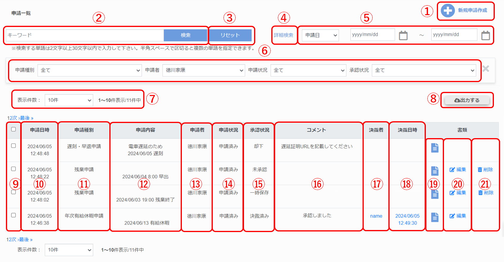
［新規申請作成］ボタン
クリックすると新規に申請する項目が表示されます。申請したい項目を選択すると新規申請作成画面に遷移します。
［検索］ボタン
キーワードを入力し、該当する項目で絞り込みを行います。
［リセット］ボタン
クリックすると検索キーワードや、詳細検索項目などの検索条件をリセットします。
詳細検索
クリックすると詳細検索項目を表示します。
代理申請した申請を確認する場合は、「詳細検索」をクリックし、申請者に代理で申請した人を設定して検索します。
日付検索
ドロップダウンリストから「申請日」、「対象日」を切り替え、右のカレンダーに期間を入力し絞り込みます。
詳細検索項目
「詳細検索」をクリックすると表示され、「申請種別」、「申請者」、「申請状況」、「承認状況」で検索できます。
表示件数
1ページ当たりの表示件数を選択できます。印刷したときも、選択した件数で出力されます。
［出力する］ボタン
クリックすると表示されている一覧を印刷します。チェックボックスにチェックがある場合は、チェックがある項目のみ印刷します。
チェックボックス
クリックすると対象の行を選択／選択解除します。一番上のチェックボックスを操作すると、一括選択／一括選択解除できます。
申請日時
申請者が申請、または一時保存した日時です。
申請種別
申請内容の種別です。
申請内容
申請理由、対象日、対象時刻、申請内容が表示されます。
申請者
申請した人を表示します。（）内は代理申請者が表示されます。
申請状況
申請が一時保存状態か申請済みかを確認できます。
承認状況
承認状況（未承認、決裁済、却下、飛越、取下げ）を確認できます。
コメント
承認者からの最新のコメントが表示されます。
決裁者
申請の決裁者を表示します。
決裁日時
申請が決裁された日時を表示します。
書類
をクリックすると、申請の詳細を閲覧できます。
編集
未承認の申請を編集したり取り下げたりします。承認済みの申請も取り下げることができます。
削除
未承認の申請を削除します。
ヒント |
「決裁者」または「決裁日時」をクリックすると、下記のようなモーダルウィンドウが表示されます。
クリックした申請の承認状況や承認履歴を確認できます。
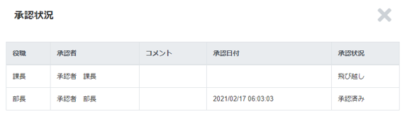
|
申請を修正する・取り下げる
決裁済みの各種勤怠承認申請を修正する、または取り下げる方法を説明します。
ご注意 |
申請を取り下げた場合、［編集］から再申請することはできません。
［新規申請作成］から申請しなおしてください。 |
［勤怠承認申請］メニューをクリックする
「申請一覧」画面が表示されます。
修正、または取り下げたい申請の［編集］をクリックする
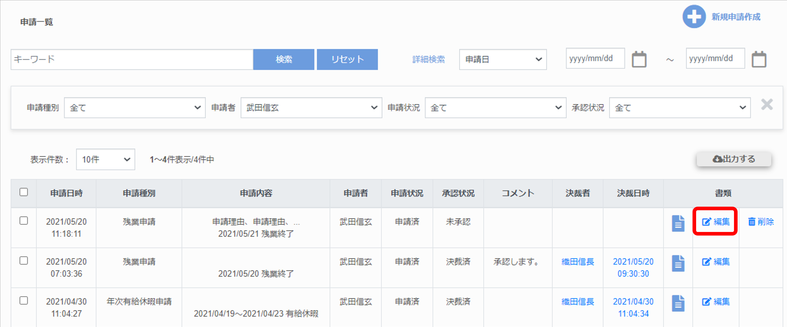
申請内容を修正する
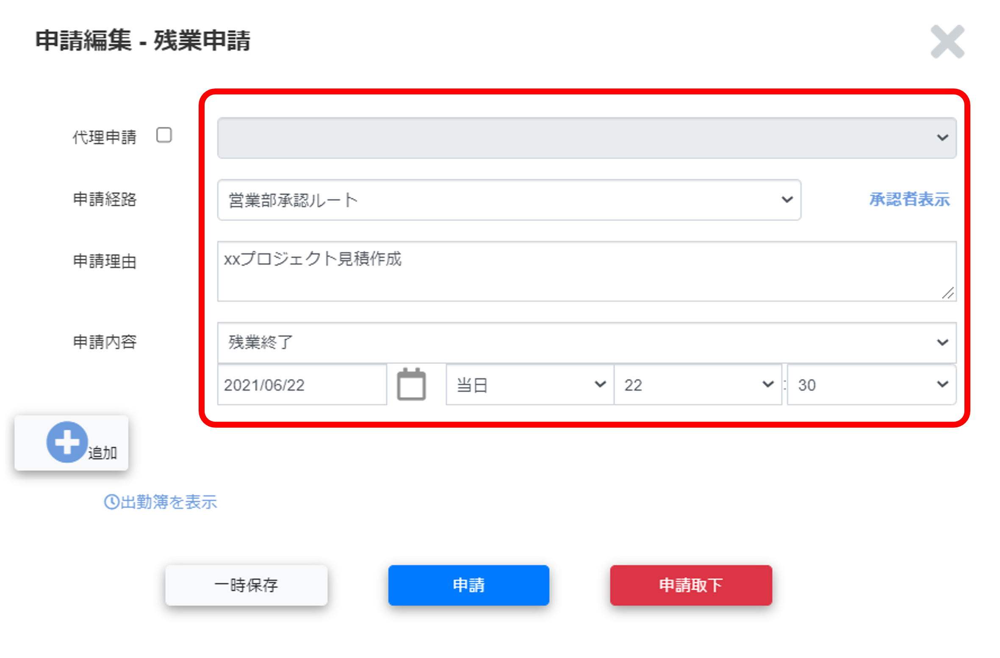
ヒント |
申請を取り下げる場合は、この画面で［申請取下］ボタンをクリックしてください。
画面が承認画面に戻り、「承認状況」が「申請取下」に変わります。
|
［申請］をクリックする
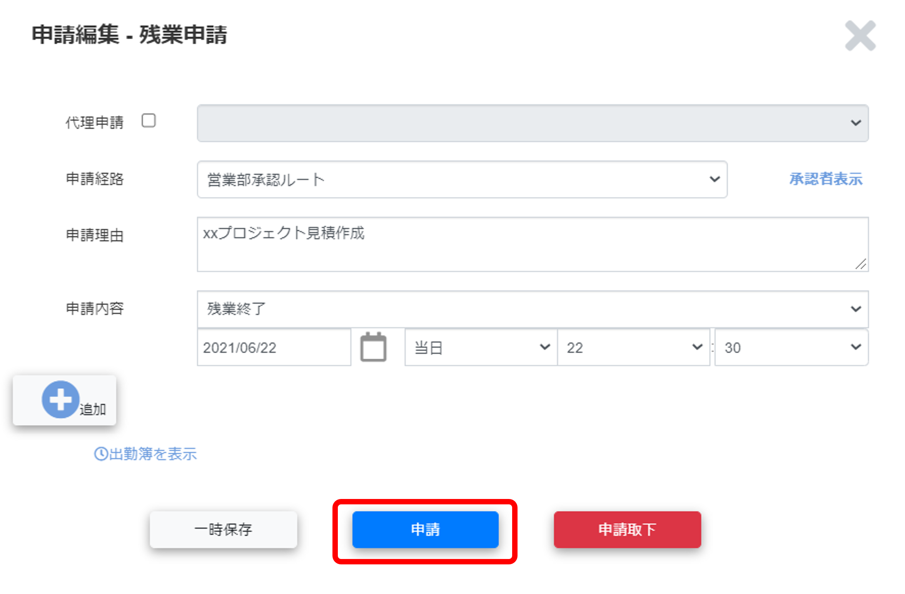